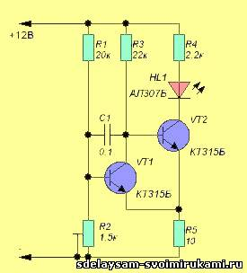
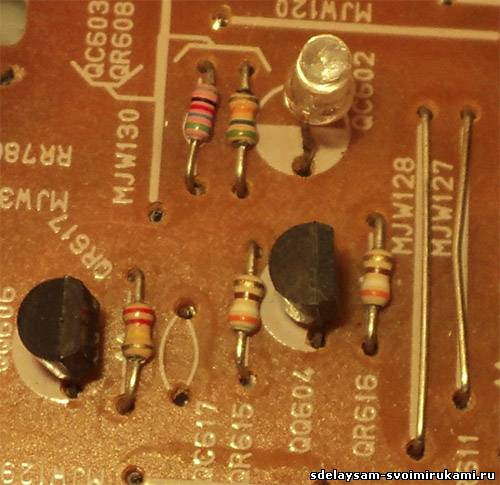

Данный индикатор вовремя сообщит Вам о том, что Ваша аккумуляторная батарея разряжена. Основным достоинством предлагаемой схемы является четкость срабатывания. Иными словами сигнальный светодиод загорается сразу без плавного нагнетания яркости. Плюс ко всему устройство довольно точно может отслеживать заданный порог срабатывания.

Схема проста и при правильной сборке и рабочих радиоэлементах начинает работать сразу без настройки. Вам останется только отрегулировать порог срабатывания подстроечным резистором R2.
Данная схема предусмотрена для аккумуляторной батареи напряжением 12 вольт.
Также схему можно переделать для аккумуляторных батарей напряжением 6 - 4 вольта. Для этого необходимо резисторы R1, R2 взять сопротивлением 10 кОм, а резистор R4 - 560-100 кОм.

PS: Можно собрать и не одну схему для аккумулятора, а скажем три. То есть первый светодиод будет срабатывать при напряжении, скажем, 11. Второй при 10,5 вольт, а третий при 10 вольтах. Тем самым Вы будете более полно владеть информацией о состоянии Вашей АКБ.
http://un7ppx.narod.ru/device1/indicator29.htm
http://radiomaster.com.ua/2278-indikator-razryada-batarei.html